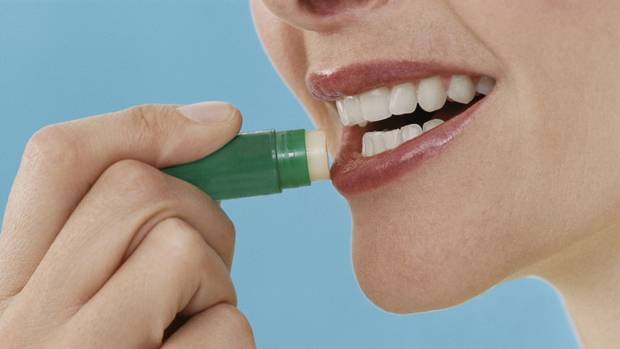

Can I Become Addicted to Lip Balm?
While this content is offered for free, I do also offer a premium subscription-based delivery service for all products that are free from potentially cancer-causing ingredients. I’ve done all the research to ensure only the best quality products may be delivered to your door step as often as you need them, without the headache of driving around and comparing labels all day. And trust me, I wouldn’t feature a product unless I felt it was safe enough for my own family to use.

The short answer is that lip balm in it of itself doesn't contain any chemicals that psychologically make us addicted. However, many people claim that they're addicted to using lip balm over, and over, and over again. Why is that?
Most lip balms contain artificial ingredients that actually prolong the "chapped effect." That's right, the more you continue to use them, the more chapped your lips will actually get! That's one way to make sure people keep coming back to buy your product. Chemicals such as phenol, menthol, or salicylic acid are obtained by these companies at very low prices and are what cause this effect. Balms with these ingredients are known for causing a pleasant tingling feeling, but that sensation is actually protective layers of dead skin on our lips peeling off! Removing these layers of skin leaves our lips more exposed to the environmental factors that cause chapping.
Another big concern is being out in the sun like this, since lips are more prone than our skin to developing serious cancers. According to Todd Perkins, a dermatologist in the District, says "skin cancer spreads more quickly on the lips than it does anywhere else." It's recommended to apply sunblock to both lips (especially the lower lip).
Also it's recommended to use lip balm without any added flavors, since depending on the person it may irritate their lips.
Now what's the difference between "petroleum-based" and "wax-based" products? Some people say that wax-based products don't work as well as petroleum-based products, but that will vary among who you talk to. Many professionals in this field will "claim" petroleum is safe enough, and does a good job trapping in the moisture on our lips. But the truth is our lips need to breath! Just like our skin needs to breath. Not to forget to mention that petroleum jelly, petrolatum, and mineral oil are a byproducts of the oil drilling industry. Even though we apply a small amount daily, much of it gets ingested, and that can add up over time.
The European Union has actually banned many products that contain petroleum jelly, and studies are being done to confirm if there is any possible cancer link with this substance. Jennifer Loza, manager of the Dallas International Dermal Institute, explains:
"Petroleum-based products offer a sense a false hydration and can lead to irritation. This cheap ingredient is still found in cosmetic preparations however should be avoided as it is highly comedogenic (doesn't allow for lips to breath). Better ingredients for the lips include shea butter, avocado, cocoa butter, wheat germ and Vitamin E as they actually provide a number of benefits, including conditioning and moisturizing the skin."
Whew what a concept! The stuff that people constantly put on their lips can actually be dangerous to their health, especially when synthetic ingredients are used.
So let's go over, why do so many lip products contain these ingredients? For one, they're cheap to obtain, cause an initial tingling sensation when applied, and most importantly of all people just aren't aware of their drawbacks. Your best bet is finding an organic lip balm that only contains natural ingredients, and not questionable chemicals that are still being tested to see if they are harmful or not. Make sure to always check that label! And if petroleum-based lip balm has already gotten to you, then check out: LipBalmAnonymous.com